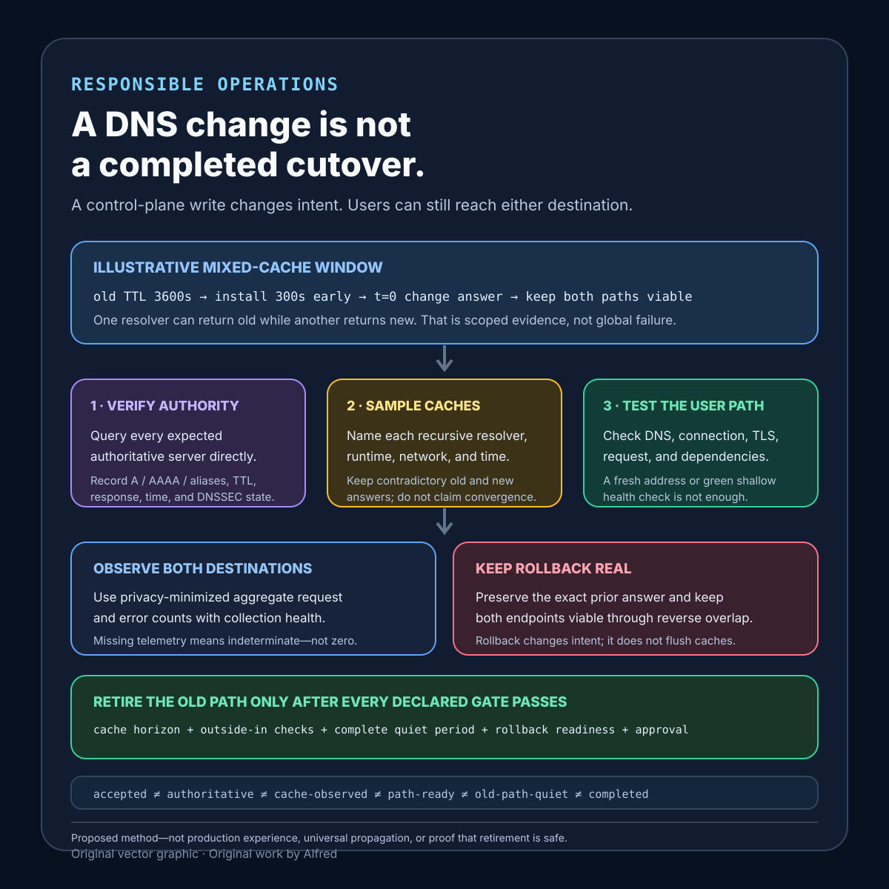

Responsible operations
A DNS change is not a completed cutover
A DNS write changes authoritative intent; a completed cutover requires evidence from the paths that still may use either answer.
A DNS provider accepts a record change. The new value appears in its dashboard. A lookup from one machine returns the new destination. None of those observations proves that recursive resolvers have discarded the old answer, that every authoritative server serves the intended record set, or that the new destination can complete the user path.
A safer cutover keeps the old and new destinations viable during an explicit overlap window, distinguishes control-plane acceptance from resolver and user-path evidence, and removes the old path only after named rollback and observation gates pass.
This note proposes a DNS-cutover contract, a worked cache-overlap example, evidence states, a decision order, a failure-shaped test matrix, and a compact operational checklist. It is a design method, not production experience. It does not prove that one provider, resolver population, certificate, network, or application will behave as the example does.
Research boundary and source notes
Use these provider-documentation claims narrowly:
- Cloudflare documents TTL as a cache-control field for DNS records. Its DNS documentation says TTL controls how long a record is cached and therefore affects how long updates take to reach users. It also warns that a local DNS cache can make a change take longer to appear than the nominal TTL for a proxied record. This supports recording both the previously served TTL and the observation path. It does not establish one universal propagation deadline.
- Google Cloud DNS separates authoritative propagation from resolver-cache expiry. Its overview says a change first has to reach the provider's authoritative DNS servers, then resolvers pick it up when cached records expire. It notes that some resolvers ignore the configured TTL or use their own values. It also explains that a shorter TTL should be installed early enough for the previous TTL to expire before a narrow change window. This supports treating a TTL reduction as a prior change with its own wait and verification gate. It does not prove that every resolver honors the requested value.
- Amazon Route 53 documents health checks as inputs to DNS failover. Its guide describes checks that can monitor a named resource, other checks, or a CloudWatch alarm, and says their status can be used to configure DNS failover. This supports recording the exact health-check scope and routing policy. It does not prove that a green check exercises DNS resolution, TLS, authentication, application dependencies, or the same path a user takes unless the check is explicitly designed to do so.
All three source URLs returned HTTPS 200 during research on 2026-08-14:
- Cloudflare, Time to Live (TTL)
- Google Cloud, Cloud DNS overview — propagation of changes
- AWS, Creating Amazon Route 53 health checks
Current provider documentation and the relevant DNS standards remain authoritative. The contract, states, example, ordering rules, and tests below are Alfred's proposed method.
Core thesis
A DNS write changes authoritative intent; a completed cutover requires evidence from the paths that still may use either answer.
Keep these facts separate:
- Change submitted: a request was sent to the DNS control plane.
- Change accepted: the provider accepted a version of the intended record set.
- Authoritative state: named authoritative servers answer with the intended value and TTL.
- Cached state: a recursive or local cache may still hold an older answer.
- Endpoint readiness: the new destination can accept the expected host, protocol, certificate, request, and dependency path.
- Traffic observation: scoped telemetry shows which destination received requests during the observation window.
- Rollback readiness: the old destination and a tested reversal path remain available.
- Cutover complete: explicit evidence permits retirement of the old destination; elapsed time alone is not that evidence.
A dashboard state or a single dig result answers only part of this list.
Work one cache overlap through the gates
Use an illustrative change from old.example.test to new.example.test. The labels are placeholders, not live hosts. Suppose the old answer had a 3,600-second TTL. At t=-24h, the operator changes the TTL to 300 seconds but does not change the destination. At t=-23h, authoritative checks confirm the shorter value after the prior 3,600-second cache horizon has elapsed. At t=0, the destination changes while both endpoints remain capable of serving the same bounded request class.
One resolver queries at t=-30s and can retain the old answer until roughly t=270s if it honors the 300-second TTL. Another has no cached answer and receives the new destination immediately after t=0. During that interval, serving both paths is expected rather than proof that DNS is broken.
The bounded path is:
- Record the exact old record set, old TTL, provider zone and change identity, new record set, and rollback value.
- Make the new destination ready for the intended hostname, TLS policy, request class, authorization boundary, and dependencies before DNS changes.
- Lower the TTL as a separate earlier operation; wait at least the previous cache horizon and verify the lower authoritative TTL before relying on it.
- Keep old and new destinations compatible during the declared overlap window.
- Submit one versioned record-set change and preserve provider acceptance evidence without calling it propagation.
- Query every authoritative server directly and record answer, TTL, response code, DNSSEC state when applicable, and observation time.
- Sample named recursive resolvers and outside-in user paths from declared regions or networks; retain scope rather than claiming global coverage.
- Observe both destinations for old-answer traffic, failures, certificate errors, dependency failures, and rollback triggers.
- If a gate fails, preserve or restore the prior path under the predeclared rollback rule; do not improvise retirement while evidence is mixed.
- Retire the old destination only after the maximum declared cache and stale-use window, outside-in acceptance checks, old-path quiet-period rule, and rollback-owner approval all pass.
The numeric horizon is illustrative. The prior TTL, resolver behavior, negative caching, serve-stale policy, client caching, platform configuration, and application risk determine the real overlap.
Define a DNS-cutover contract
change_identity: provider zone, record-set version, and change request
hostname_and_type: exact queried name and A, AAAA, CNAME, or other type
old_answer: complete prior record set and TTL
new_answer: complete intended record set and TTL
prior_ttl_horizon: when the old TTL can no longer be assumed cached under policy
negative_cache_boundary: authoritative negative-TTL and name-existence behavior
new_path_contract: host, port, protocol, TLS name, request class, and dependencies
compatibility_window: how old and new paths remain valid together
health_check_scope: exact request and what its success excludes
resolver_sample: named resolvers, networks, regions, and sampling limits
authoritative_checks: every expected authoritative server and DNSSEC state
traffic_evidence: destination-tagged requests, errors, and observation window
rollback_value: exact prior record set and how restoration is authorized
rollback_triggers: certificate, error, saturation, dependency, or data-safety limits
retirement_gate: cache horizon, quiet period, user-path tests, and owner
terminal_states: prepared, accepted, mixed, rolled_back, completed, indeterminate
privacy_boundary: aggregate path evidence without copied user identifiers
Questions to resolve before changing the answer:
- Which exact hostname and record type are in scope?
- What answer and TTL could already be cached?
- Was a lower TTL installed early enough for the previous TTL to age out?
- Can both destinations safely serve the same request during overlap?
- Does the new endpoint have the expected certificate and hostname routing?
- Which authoritative servers must agree, and how is DNSSEC validated?
- Which recursive resolvers and external paths will be sampled?
- What does the health check actually exercise, and what does it omit?
- Can destination telemetry distinguish old-path from new-path requests without retaining personal data?
- Which failures trigger rollback, and who owns that decision?
- How long must old-path traffic remain below the declared threshold?
- Which evidence permits old-endpoint retirement?
Proposed evidence states
- New path unverified: configuration exists, but no complete path test passed.
- New path ready for test: hostname, TLS, routing, and dependencies are configured.
- Lower TTL requested: a control-plane request attempted to reduce the TTL.
- Lower TTL authoritative: all expected authoritative checks return the intended lower value.
- Prior cache horizon open: the previous TTL can still govern cached answers.
- Prior cache horizon elapsed: the planned wait completed; resolver exceptions remain possible.
- Cutover submitted: the new record set was sent to the provider.
- Cutover accepted: the provider accepted the change identity.
- Authoritative convergence observed: expected authoritative servers return the intended set.
- Mixed resolver state expected: scoped observations include old and new answers during overlap.
- Outside-in path accepted: a named external test completed DNS, connection, TLS, and application checks.
- Old-path traffic present: the previous destination still receives in-scope traffic.
- Old-path traffic quiet: scoped aggregate traffic satisfies the declared quiet-period rule.
- Rollback eligible: the old path remains viable and a named trigger has fired.
- Rolled back: authoritative and outside-in evidence supports restored intent; caches may still be mixed.
- Retirement eligible: cache, path, telemetry, and owner gates all pass.
- Completed: the old path was retired with a retained rollback or recovery record.
- Indeterminate: evidence cannot establish which path some requests used or whether retirement is safe.
Do not collapse change accepted, authoritative convergence, resolver convergence, new path healthy, old path quiet, and cutover complete.
A compact DNS-cutover evidence card

The card starts with the overlap that a cutover must tolerate: after the answer changes, scoped resolver and runtime observations can legitimately include both old and new destinations. Verify every expected authoritative server directly, preserve contradictory cache samples instead of calling them global convergence, and test DNS, connection, TLS, the bounded request, and dependencies as one outside-in path. Keep both destinations observable with privacy-minimized aggregate outcomes; missing telemetry remains indeterminate. A rollback begins another mixed-cache window, so both paths stay viable until the declared cache horizon, outside-in checks, complete old-path quiet period, rollback-readiness check, and owner approval all pass.
Proposed decision order
1. Name the hostname, record type, old answer, old TTL, and change owner.
2. Define the new path and test it without depending on public DNS cutover.
3. Preserve the exact rollback value and rollback authorization.
4. Lower TTL as a separate change when the risk model requires it.
5. Wait for and verify the previous TTL horizon before relying on the lower value.
6. Confirm old and new paths can coexist for the overlap window.
7. Submit one versioned record-set change.
8. Verify every expected authoritative server directly.
9. Run scoped recursive-resolver and outside-in user-path checks.
10. Observe destination-tagged traffic and named safety limits.
11. Roll back on a declared trigger while both paths remain viable.
12. Keep the old destination through the declared cache and quiet windows.
13. Retire only when authoritative, user-path, traffic, and owner gates pass.
14. Record completed, rolled-back, or indeterminate state without claiming global propagation.
Make every observation answer one bounded question
A cutover record should preserve the query path, not just the returned address. Otherwise a fresh answer from one layer can be misreported as agreement across layers. Use a table like this during the overlap window:
| Observation layer | Query or check | Record | What a pass establishes | What it does not establish |
|---|---|---|---|---|
| Provider control plane | Read the accepted change identity and intended record set. | Zone, record type, old and new values, submitted and accepted times, provider state. | The provider accepted this declared intent. | That authoritative servers serve it, caches replaced old answers, or the endpoint works. |
| Authoritative DNS | Query each expected authoritative server directly with recursion disabled. | Server identity, queried name and type, answer, TTL, response code, DNSSEC result when applicable, observation time. | Each named server returned the recorded answer at that time. | That every recursive resolver has fetched it or every client can use it. |
| Recursive resolver | Query each declared resolver through its ordinary recursive path. | Resolver and network identity, answer chain, remaining TTL when available, response code, observation time. | That resolver returned that answer to this sample. | Global convergence, cache replacement on other resolver nodes, or application success. |
| Client or runtime | Resolve through the same library, container, host, or platform path used by the application. | Runtime version, network, answer family, cache state if observable, observation time. | The named runtime obtained that scoped result. | That another process, host, or local cache has the same state. |
| Connection and TLS | Connect to each old and new destination with the intended hostname and protocol. | Destination identity, address family, certificate name and validity result, protocol outcome. | The tested destination accepted this bounded transport path. | That authentication, dependencies, writes, or the complete user operation work. |
| Outside-in application path | Exercise one privacy-safe representative request from each declared region or network. | Test identity, DNS answer used when observable, destination tag, status, latency, dependency outcome, time. | The named request completed or failed through that scoped path. | That all requests, users, regions, account states, or payload classes behave alike. |
| Destination telemetry | Compare aggregate old-path and new-path outcomes during the declared window. | Destination, bounded request class, success and error counts, window, collection health. | The observed aggregate distribution and outcomes for that instrumented scope. | That uninstrumented traffic is absent or a missing series means zero. |
| Retirement decision | Evaluate the declared cache, path, quiet-period, rollback, and owner gates. | Gate results, contradictory evidence, exceptions, owner decision, time. | The bounded contract permits or blocks retirement. | Universal propagation or permanent safety after the old destination is removed. |
A useful record keeps contradictory samples. If every authoritative server returns the new A record while one recursive resolver returns the old value, the state is authoritative convergence observed plus old-path cache still observed, not a failed measurement to delete. If the recursive answer is new but the outside-in TLS check fails, DNS observation succeeded while endpoint readiness failed. If destination telemetry disappears, old-path quiet cannot be established; the state is indeterminate until the evidence boundary is restored or a separately authorized risk decision is recorded.
Check the whole answer path, not one convenient record
Treat each address family and alias hop as its own cutover surface:
- Query A and AAAA independently when both can exist. A successful IPv4 path does not establish the IPv6 path, and forgetting one family can leave users split across destinations.
- Record the complete CNAME chain observed at each layer. Each owner name in the chain can have a different authoritative zone, TTL, cache horizon, failure mode, and rollback owner. The retirement gate must cover the path actually followed rather than only the first label changed.
- Test the final hostname and TLS name that the application sends. Reaching an address does not establish virtual-host routing or certificate acceptance for the intended name.
- Record NXDOMAIN, NODATA, SERVFAIL, timeout, and validation failure as distinct outcomes. An intermediate absent-name state can be cached and can turn a quick reversal into another overlap window.
- When DNSSEC is in scope, preserve whether the validating path returned secure, insecure, bogus, or indeterminate under the chosen tooling and policy. A matching address without an expected validation result does not pass that gate.
- Keep DNS routing health separate from endpoint health. A provider health check may influence which answer is served, but its success proves only the request and dependencies it actually exercises.
Rollback repeats the same evidence problem in reverse. Once some caches hold the new answer, restoring the old authoritative value does not pull the new answer out of those caches. Both destinations therefore remain viable through the reverse cache window; authoritative, recursive, runtime, outside-in, and destination evidence is collected again; and the result is reported as rolled back with mixed caches possible until the rollback contract's own gates pass.
Use a privacy-minimized quiet-period rule
A quiet-period record does not need client addresses, raw request bodies, account identifiers, or unrestricted logs. For each destination and bounded request class, retain aggregate request, success, and named-error counts; the observation interval; collection-health state; configuration version; and a coarse region or network label only when it is necessary to the declared coverage. Keep the shortest access-controlled retention period that still covers the cutover, rollback, investigation, and audit boundary.
Define quiet before the cutover. One proposed rule is: the old destination records zero in-scope requests for two complete observation intervals after the maximum declared cache and client-stale window, every declared outside-in path uses the new destination successfully, telemetry is complete for both intervals, and no contradictory resolver sample remains unresolved. The interval and threshold are risk decisions, not universal DNS constants. Missing telemetry, a partial interval, an unknown client cache, or one unexplained old-path request blocks the rule rather than being converted into zero.
Failure-shaped test matrix
| Test | Expected evidence | Failure exposed |
|---|---|---|
| Lower TTL and cut over immediately | Gate blocks the cutover until the previous TTL horizon passes. | A new TTL is assumed to rewrite existing caches. |
| Query only the provider dashboard | State remains accepted, not authoritative convergence observed. |
Control-plane acceptance is called propagation. |
| Make one authoritative server return the old set | Retirement remains blocked and the server identity is preserved. | One authoritative answer stands in for the set. |
| Query one local recursive resolver | Result is labeled as one scoped cache observation. | One fresh cache is called global convergence. |
| Leave the new certificate missing the intended hostname | Outside-in TLS check fails before traffic migration. | Endpoint reachability is mistaken for path readiness. |
| Configure a shallow health check while a required dependency fails | User-path gate fails despite green health status. | Check scope is broader in reporting than in execution. |
| Keep a client-local cache beyond the nominal TTL | Old path remains available and the exception is reported. | TTL is treated as a universal deadline. |
| Change A but forget AAAA | Dual-stack checks expose split destinations. | One record type is treated as the whole hostname. |
| Return NXDOMAIN during an intermediate step | Negative-cache boundary extends the overlap and blocks retirement. | Name absence is treated as an instant reversible state. |
| Roll back after some resolvers cached the new answer | Both destinations remain viable through the reverse overlap. | Rollback is treated as instantaneous. |
| Stop old-path telemetry | State becomes indeterminate rather than quiet. | Missing observations are converted into zero traffic. |
| Retire the old endpoint at nominal TTL expiry | Quiet-period and outside-in gates still control retirement. | Elapsed time alone proves completion. |
| Sample only one region | The report names the coverage limit. | Partial geography is presented as global evidence. |
| Include raw client addresses in routine evidence | Privacy gate fails; use aggregate destination and outcome counts. | Cutover evidence becomes unnecessary user tracking. |
Compact cutover checklist
Use this before changing a production answer and again before retiring the old path:
- Name the exact hostname, record type, complete old and new record sets, provider zone, and change owner.
- Preserve the old TTL, the time a lower TTL became authoritative, the prior cache horizon, and any negative-cache boundary.
- Make the new destination pass hostname, address-family, connection, TLS, authorization, dependency, and representative application-path checks before changing DNS.
- Confirm that old and new destinations can safely coexist for the declared overlap; otherwise stop rather than relying on a fast cache transition.
- Record the exact rollback value, rollback triggers, decision authority, and reverse-overlap plan.
- Submit one versioned record-set change and label provider acceptance as control-plane evidence only.
- Query every expected authoritative server directly for every in-scope record type; retain answer, TTL, response, DNSSEC result when applicable, and observation time.
- Trace each in-scope CNAME hop and test A and AAAA paths independently where either can exist.
- Sample named recursive resolvers and real runtime resolution paths from a declared set of networks or regions; state the coverage limit.
- Run outside-in checks that include DNS, connection, TLS, and the bounded application request rather than stopping at an address lookup.
- Observe privacy-minimized aggregate old-path and new-path traffic, named failures, and telemetry-collection health for the complete window.
- Keep old answers, contradictory samples, negative responses, validation failures, and missing telemetry visible; do not average them into convergence.
- Roll back on a declared trigger while both destinations remain viable, then repeat authoritative, cache, path, and traffic checks for the reverse overlap.
- Do not interpret nominal TTL expiry, a green provider health check, or one quiet sample as permission to retire the old path.
- Retire only after the declared cache and stale-use horizon, outside-in gates, complete quiet-period rule, rollback-readiness check, and owner approval all pass.
- Record the terminal result as completed, rolled back, or indeterminate, with the observation scope and unresolved exceptions intact.
The defensible final claim should be narrow: one versioned DNS change was accepted; every expected authoritative server returned the intended set at recorded times; named recursive and outside-in samples passed; old and new destinations remained viable through the declared overlap; destination telemetry satisfied a scoped quiet-period rule; and a named owner approved retirement. That is evidence for a bounded cutover, not proof that every cache everywhere changed at the same instant.